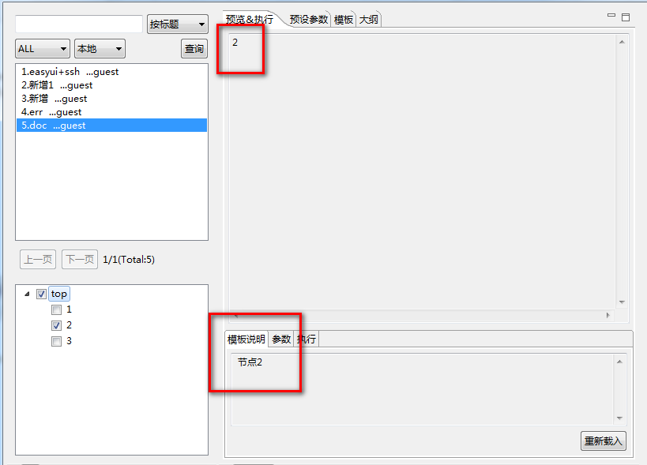

文档标签.
文档标签<ftl_doc></ftl_doc>
该标签一般描述模板的使用说明,比如对模板中方法的介绍,使用等等。
包含在文档标签里面的内容不会在预览框或文件中生成。
<ftl_head> { 'node1':'1', 'node2':'2', 'node3':'3' } </ftl_head> <#if checkedList?seq_contains("node1")> 1<ftl_doc> 节点一</ftl_doc> </#if> <#if checkedList?seq_contains("node2")> 2<ftl_doc> 节点2</ftl_doc> </#if> <#if checkedList?seq_contains("node3")> 3 <ftl_doc> 节点3</ftl_doc> </#if>
选中节点2，效果如下：
